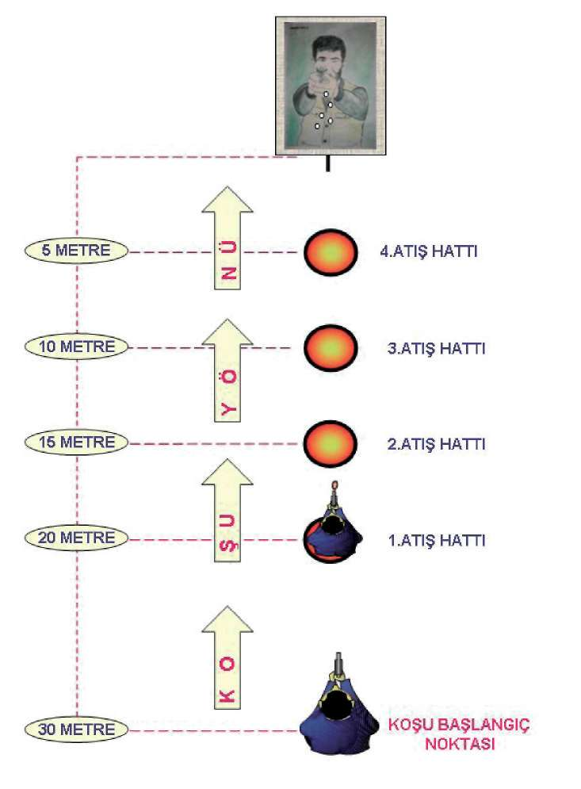
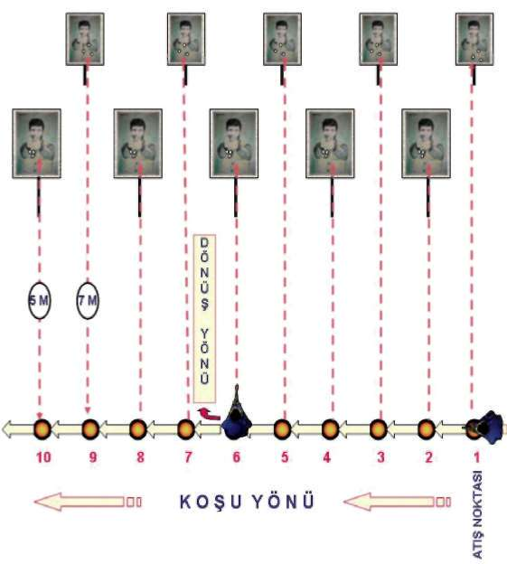
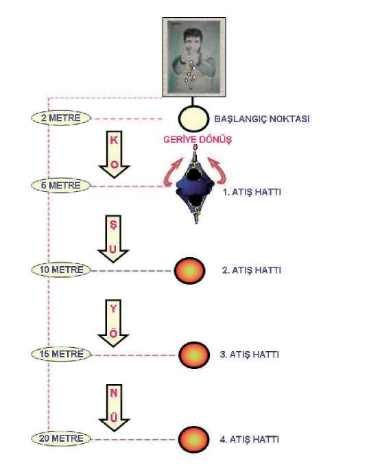

Bu teknik,
^ Koşu hâlindeyken çıkan ani hedeflere yönelik nasıl durup atş yapılacağını,
^ Operasyon esnasında yer değiştirmelerin daha seri olarak yapılmasını,
^ Savunulması zor alanlardan hızlı şekilde çıkılmasını,
^ Efor sarf ederken veya kalp atışlarının ve stresin yüksek olduğu durumlarda tabancayı kullanmasını,
^ Birbirini takip eden seri operasyonlarda personele kondisyon sağlar 74


BÖLÜM
İLERİ SEVİYE ATIŞ TEKNİKLERİ
Şekil-7.a) Koşarken Önden Çıkan Hedeflere Doğru Durarak Atış İstasyonu 75

Şekil-7.b) Koşarken Sağdan Çıkan Hedeflere Doğru Durarak Atış İstasyonu Şekil-7.c) Koşarken Soldan Çıkan Hedeflere Step yapıp Durarak Atış istasyonu 76


BÖLÜM
İLERİ SEVİYE ATIŞ TEKNİKLERİ
Şekil-7.d) Koşarken Geriden Çıkan Hedeflere Step yapıp Dönerek Atış istasyonu 1.7. YARI OTOMATİK TABANCA İLE HAREKET HÂLİNDEYKEN
FARKLI AÇILARDAN ÇIKAN HEDEFLERE DOĞRU ATIŞ TEKNİKLERİ
Tekniğe önce yürüme tekniklerini öğreterek başlayın.
1.7.1. İleriye Doğru Yürüme Tekniği
Yürürken atış yapıldığında tabancada sallanma olacaktır. Bu sallanmayı en aza indirebilmek için yürüyüş ayak topuğundan, ayakucuna doğru yapılmalıdır Bacaklar hafif kırık, göğüs ve baş az öne alınmış olmalıdır. Bu durum ringdeki boksörün duruşuna benzer.
1.7.2. Geriye Doğru Yürüme Tekniği
Bu teknik ileriye doğru yürüme tekniğinin tam tersidir. Geriye doğru yürüme ayakuçlarından ayak topuğuna doğru olmalıdır. Diğer vücut pozisyonu aynıdır.
1.7.3. Yürürken Şarjör Değiştirme Tekniği
Yürürken şarjör, tabanca hedeften başka yöne doğru çevrilerek değiştirile-mez. Tabancayı kavrama pozisyonu bozulmadan aynı elin başparmağı şarjör değiştirme mandalına yetişmeyeceğinden dolayı diğer elle mandala basılır şarjör çıkartılır. Ç ıkan şarjör yere bırakılarak yedekteki şarjör çıt sesi gelinceye kadar tabancaya itilir. (Bakınız Resim-9)